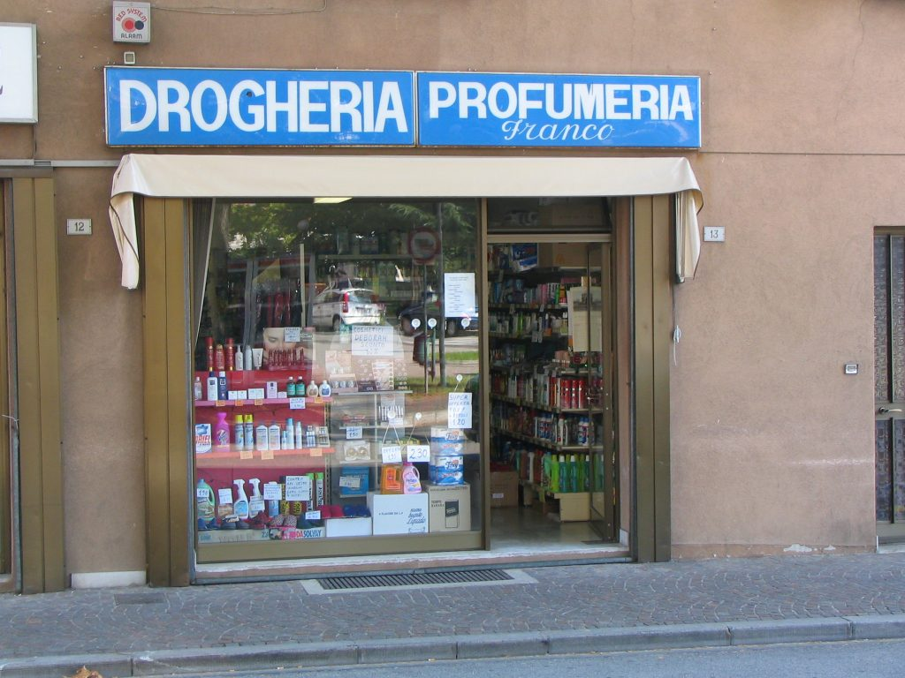

La drogheria: the Italian drugstore
The drogheria is very similar to the American drug store. Here you can buy perfumes, house products, soaps, detergents, lotions, etc., but not medicines or drugs, despite what the name suggests. {This is an excerpt from chapter 5 “Stores” of the eBook “Italy from the Inside. A native Italian reveals the secrets of traveling in Italy”. Buy our eBook on Amazon and leave us a review! If it’s good, you’ll make us happy, if it’s bad, you’ll make us improve. Thank you either way!}